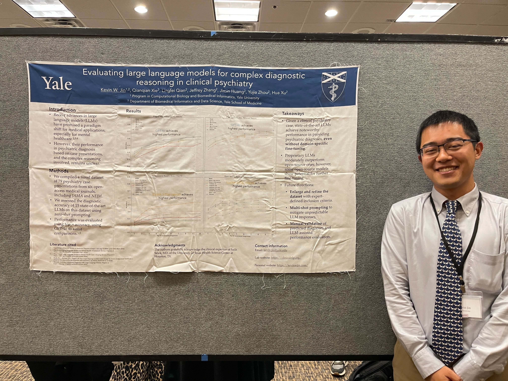

|
Kevin W. Jin Hello there! I'm a first-year PhD student in the Interdepartmental Program in Computational Biology and Biomedical Informatics at Yale University. I am a member of the Clinical NLP Lab, a group in the Department of Biomedical Informatics and Data Science at Yale School of Medicine. I am grateful and fortunate to be advised by Hua Xu. As a data scientist in training, I have diverse academic interests across the emergent field of biomedical informatics1, but I concentrate on digital psychiatry: investigating mental health with computational and statistical methods. I was born and partially raised in Dallas, TX but spent much of my childhood in Beijing, China. I returned to Dallas to finish high school and left for Baltimore, MD for my undergraduate work, completing a B.S. in molecular and cellular biology at Johns Hopkins University in 2020. I returned to Dallas once again and underwent a career transition from a pre-medical track to biomedical informatics. This involved the completion of quantitative coursework and dual full-time research assistant positions at the University of Texas at Dallas in the Department of Mathematical Sciences and UT Southwestern Medical Center in the Quantitative Biomedical Research Center. My research experience spans the biophysical properties of cancer, molecular radiation oncology, microfluidic single-cell analysis, statistical shape analysis, and clinical natural language processing. Outside of research, I'm passionately invested in global affairs (particularly East Asian geopolitics) and military history. My favorite publications are The Economist, The New Yorker, Reuters, The Associated Press, BBC News, The New York Times, Bloomberg, The Washington Post, The Atlantic, NPR, and Nikkei Asia. I also follow the work of the Brookings Institution, the Carnegie Endowment for International Peace, and the Center for Strategic and International Studies. Ways that I add flavor to my life include reading a truly inordinate amount of news, studying languages2, baking desserts and cooking way too much Italian/Japanese/Chinese food3, as well as sparring with other shinai-wielding fanatics at the Yale Kendo Club4. I'm also active in the Yale Graduate Consulting Club, the Yale Biotech Club, the Yale Japanese American Student Union, and the Yale Chapter of the Alexander Hamilton Society. Bio / Email / CV / Google Scholar / Twitter / GitHub / LinkedIn |
News & Highlights
|
Research Interests
|
Selected Publications and Conference ProceedingsFor a complete list of publications, see my Google Scholar profile. Artificial intelligence in mental healthcare: an overview and future perspectives Kevin W. Jin, Qiwei Li, Yang Xie, Guanghua Xiao The British Journal of Radiology, 2023 abstract / bibtex * Denotes equal contribution. |
Talks, Workshops, & Lectures
July 2024: Despite a worldwide cybersecurity outage of nearly apocalyptic proportions, Computational Psychiatry 2024 was a rousing success! I presented my poster, "Evaluating large language models for complex diagnostic reasoning in clinical psychiatry", to much interest from attendees. Proud to represent BIDS and Xu Lab at the University of Minnesota!

April 2024: I delivered a talk on modeling psychiatric phenotypes from wearable accelerometer data derived from the UK BioBank for the Bridging GAPS Diversity in STEM Symposium at Yale! This work was conducted as part of my research rotation through Mark Gerstein's lab in my first year. March 2024: I led a workshop on utilizing McCleary, a high-performance computing cluster operated by the Yale Center for Research Computing. This was the second of four workshops in the From Milliliters to Megabytes (M2M): Intro to Data Management and Computing Series, organized by the Yale BBS Diversity and Inclusion Collective. Slides here. The audience was comprised of graduate students and medical students of all backgrounds. We had a full room (approx. 30 in attendance) and around 10 on Zoom! |
Footnotes1 Broadly construed, biomedical informatics refers to the computational analysis and statistical interpretation of biological and clinical data. ↩ 2 Japanese (intermediate), Mandarin Chinese (advanced), Korean (beginner), and Latin (intermediate, in theory). ↩ 3 My favorite dessert is tiramisù. Respectively, my favorite main dishes are lasagna bolognese, karashibi miso ramen from Kikanbo in Tokyo (wouldn't dare make this myself), and potstickers with pork and Chinese sauerkraut. ↩ 4 Depiction courtesy of Irasutoya; unfortunately, we don't practice jukendo, even though it looks stunningly cool. ↩ |
|
|
|
Last Updated: July 24, 2024 Site Template |


{kind=link}